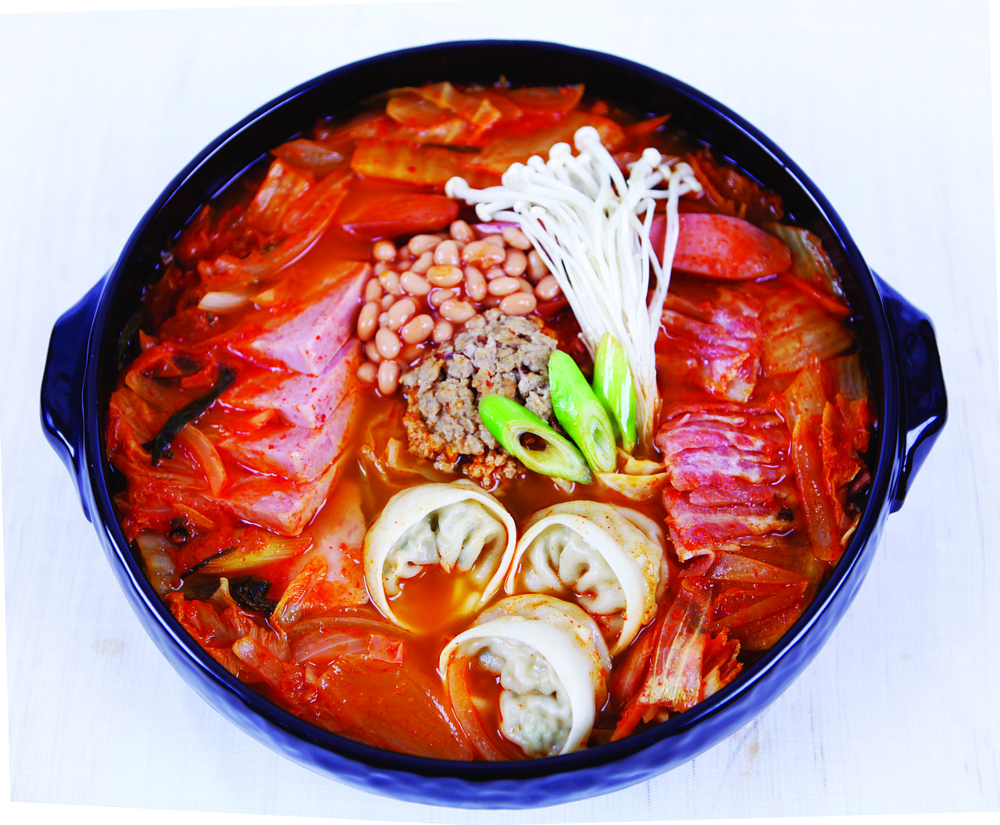

Budae-jjigae

Description
Budae-jjigae or Army Stew, is a Korean dish that has origins in the Korean War. It is a stew that typically
consists of gochujang, kimchi, SPAM, sausage, and instant noodles.
Ingredients
- Soup base
- Gochujang
- Kimchi
- Sausage
- SPAM
- Instant noodles
- Other ingredients of your choosing
Steps
- Fill a pot with water
- Add soup base, gochujang, other seasonings
- Chop the rest of your ingredients and add them to the pot
- Boil until ready
Home